Agenda
- Host company
- Project context
- Problem & objectives
- State of the art
- Proposed solution
- Business & system objectives
- Methodology
- Technology choices
- Architecture & modeling
- The platform, sprint by sprint
- Case study & live demo
- Conclusion & perspectives
Host Company — INSOMEA
Microsoft Cloud Gold Partner · Middle East & Africa · 6 offices · 500+ customers · Microsoft Partner of the Year ×5
Modern Workplace
Collaboration & productivity with Microsoft 365 and Teams — adoption & change management.
Security
Identity & access management, information protection, threat protection.
Cloud & Infrastructure
Microsoft Azure, datacenter, DevOps, application development & integration — where this project lives.
This PFE was conducted in the Cloud & Infrastructure team over 6 months.
Project Context
Machine learning is stuck in notebooks
Models are trained on laptops, results tracked in spreadsheets, deployment is manual and fragile — the classic "level 0" workflow.
Industrialize the full ML lifecycle
One platform: upload code → train on a Kubernetes cluster → track every experiment → register, deploy & consume models.
Deployed on real cloud infrastructure
Runs in production on Azure Kubernetes Service, continuously delivered by CI/CD, publicly reachable behind Cloudflare.
Problem & Objectives
Objectives of the PFE:
- Upload & run any code on the cluster
- Track every experiment automatically
- Registry: version & promote models
- One-click deployment as live services
- Public API for external applications
- Monitoring, diagnostics & administration
State of the Art
| Solution | Strengths | Limitations |
|---|---|---|
| SageMaker / Vertex AI / Azure ML | Full managed lifecycle | Vendor lock-in, recurring cost, hidden mechanics |
| Databricks | Strong data + training environment | Subscription; data-centric, not serving-centric |
| AIchor (InstaDeep) | Cluster training via GitOps | Stops at training — no registry, no serving, no public API; requires Git + Docker skills |
| Kubeflow (open source) | Powerful primitives | No product: no users, no projects, heavy integration work |
| This project | Full lifecycle — training → tracking → registry → serving → public API — 100% open-source, self-hosted, browser-only for the user | |
Proposed Solution — the complete ML lifecycle, one platform
MLOps lifecycle
code + data
isolated pod
autolog
versions
KServe
predictions
public API
KPIs · telemetry
Business & System Objectives
| Business objective | Delivered system capability |
|---|---|
| Train without owning infrastructure | Any .py / .ipynb / .zip runs in an isolated, resource-limited Kubernetes pod |
| Never lose an experiment | MLflow autolog captures params, metrics & artifacts of every run — zero code changes |
| Choose the best model objectively | Leaderboard groups runs by model family, ranked on evaluation metrics only |
| Ship a model like software | Registry versions + stages; one-click deployment as a KServe InferenceService |
| Let external apps consume models | Public endpoint secured by hashed API keys — no platform account needed |
| Operate & trust the system | Model-evolution KPIs, serving telemetry, failure diagnostics, admin area |
Methodology — Scrum, 4 sprints
6 months (12 Jan → 11 Jul 2026) · product backlog of 15 user stories · a demonstrable increment per sprint
Product Owner: Mr. A. Gonji (INSOMEA) · Scrum Master: Mr. B. M. Achref · Dev team: the student
Global Use Case Diagram
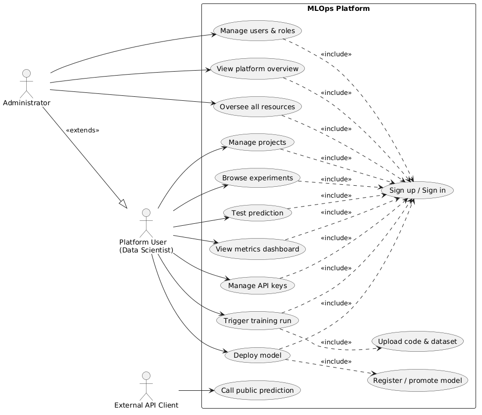
Technology Choices
MLOps Core
 MLflow — tracking & registry
MLflow — tracking & registry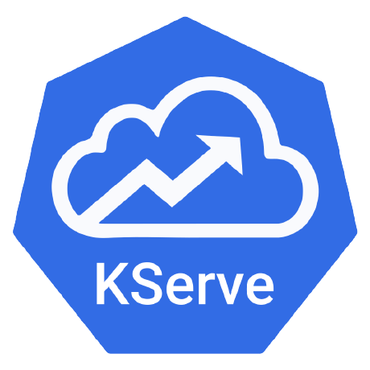
KServe — model serving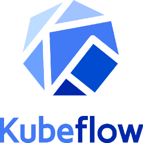
Kubeflow Pipelines + ArgoApplication
 Angular 19 — frontend SPA
Angular 19 — frontend SPA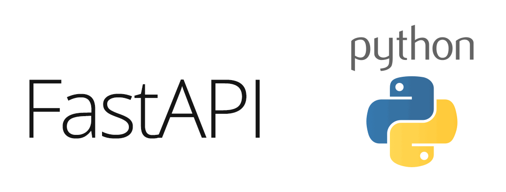
FastAPI — async backend PostgreSQL — platform + MLflow
PostgreSQL — platform + MLflowInfrastructure
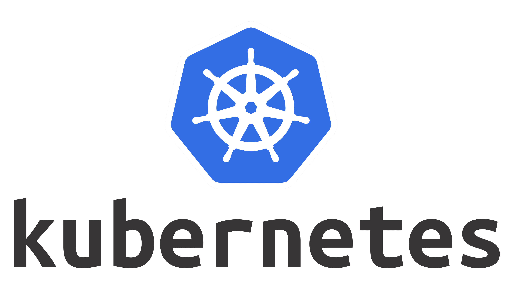
Kubernetes — AKS / KinD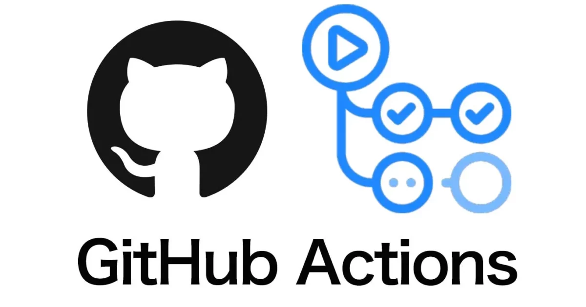
GitHub Actions — CI/CD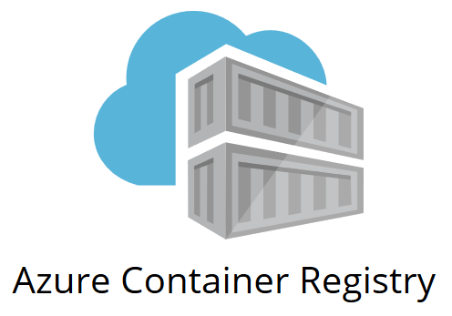
Azure Container RegistryLogical Architecture
MLflow — experiments & registryDeployment Architecture
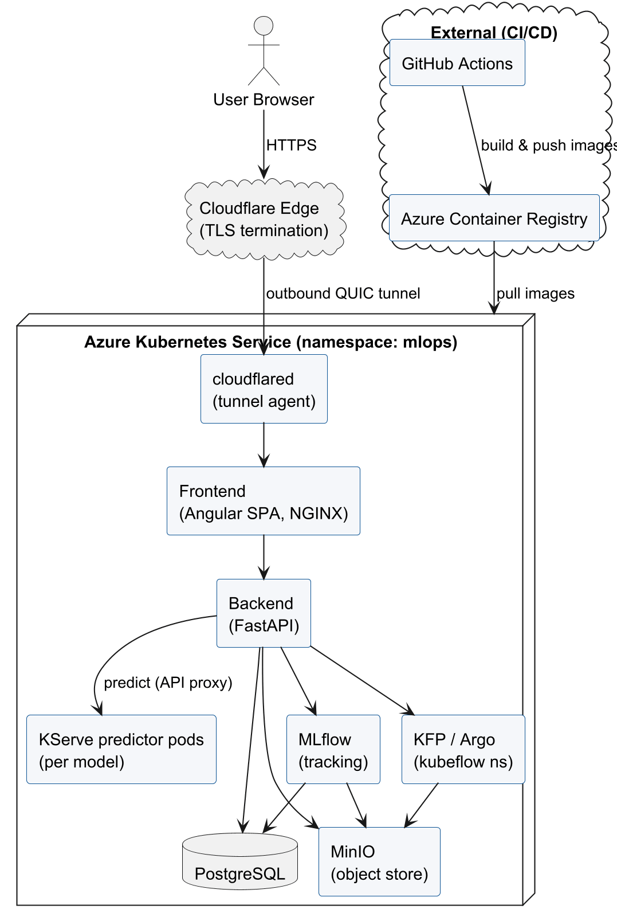
browser → Cloudflare edge (TLS) → tunnel → frontend → backend → { PostgreSQL · MinIO · MLflow · KFP/Argo · KServe } — all on AKS
SPRINT 1 Foundation — identity & projects
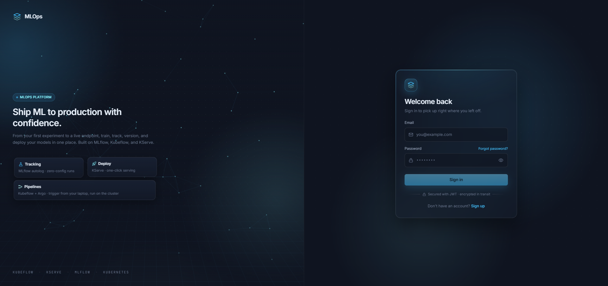
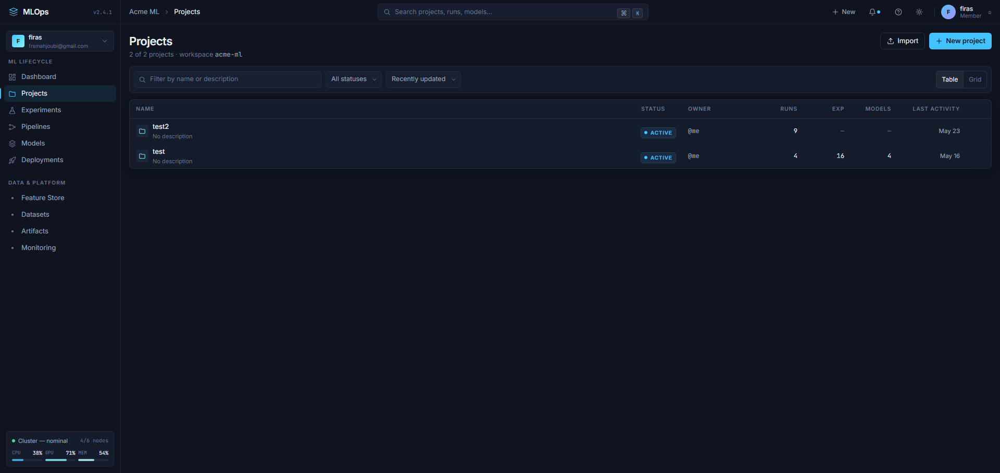
SPRINT 2 Training & Tracking — the engine
Run code
code + data
dependencies
runner wraps script
auto-retry deps
metrics · params · model
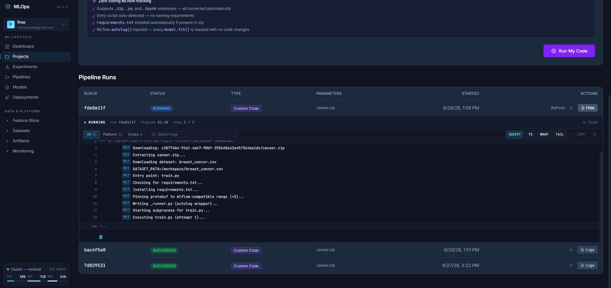
Signature Feature — notebook → script conversion
Real-world notebooks are full of Jupyter-only constructs. The platform converts them to clean scripts at upload time, using IPython's own transformer — not fragile regexes.
# messy Colab notebook !pip install xgboost %matplotlib inline %%time model.fit(X_train, y_train) files = !ls
# clean runnable script subprocess.check_call([sys.executable, '-m','pip','install','xgboost']) # magic removed — code kept: model.fit(X_train, y_train) files = subprocess.run('ls', ...)
- String-safe — magics inside strings untouched
!pip installpreserved as real installs%%timebody kept — training never lost- Output guaranteed to compile, or safe fallback
Experiments Intelligence
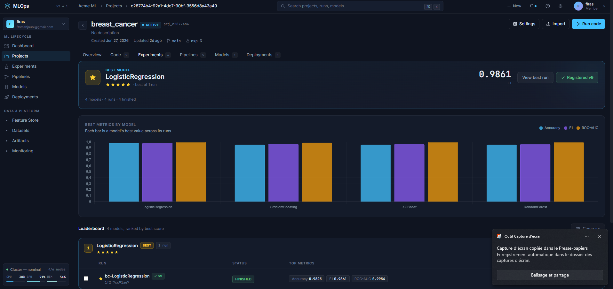
- Runs grouped by model family (autolog tags)
- Ranked on evaluation metrics only — never training scores
- Champion banner + star ratings
- Register any run as a model version, in one click
SPRINT 3 Registry & Deployment
model version
one K8s resource
reconciles
Service · Ingress
loads from MinIO
predict!
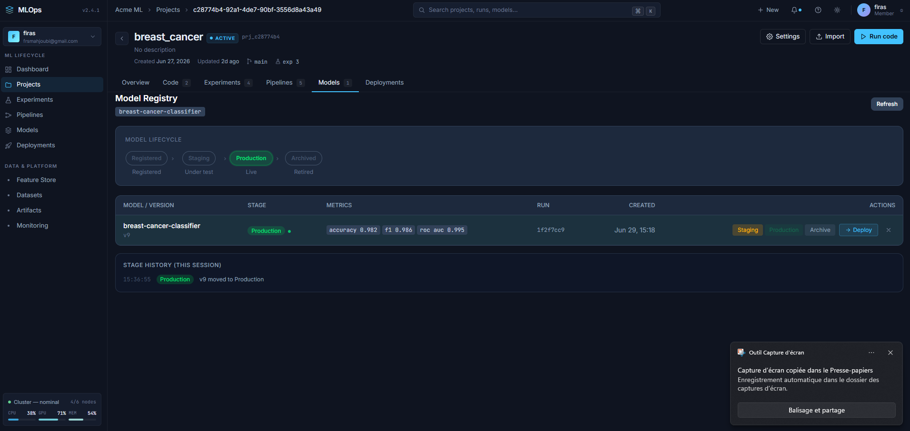
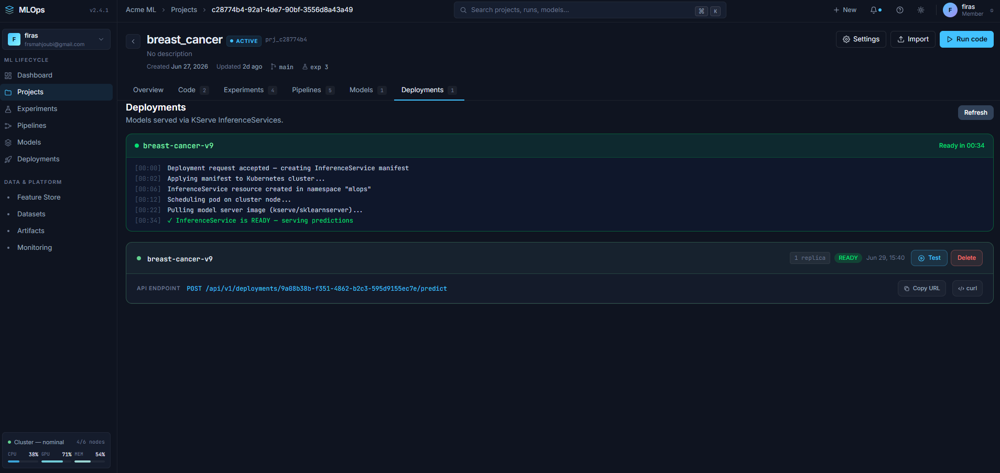
Prediction & Public API
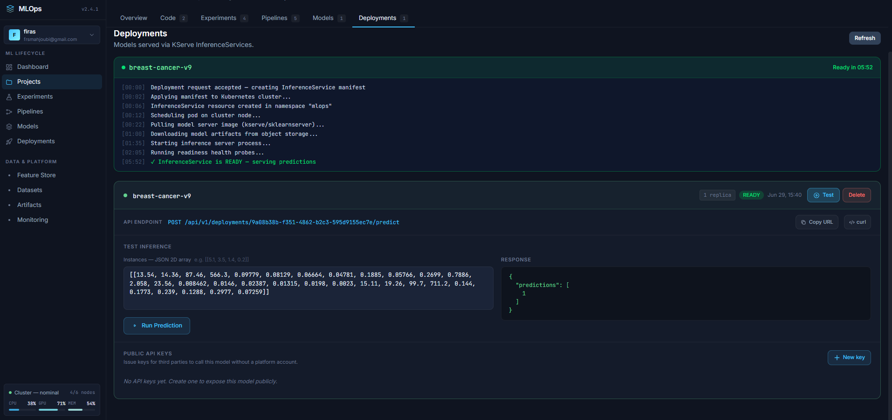
curl -X POST https://mlops.firasmahjoubi.app /api/public/predict/<deployment> -H "Authorization: Bearer mlops_****" -H "Content-Type: application/json" -d '{"instances": [[17.9, 10.3, ...]]}' → {"predictions": [0]} # 45 ms
- Per-deployment API keys — SHA-256 hashed, shown once
- Any website / app can consume the model — no account
- Ready-to-paste cURL / JS / Python snippets generated
SPRINT 4 Observability & Administration
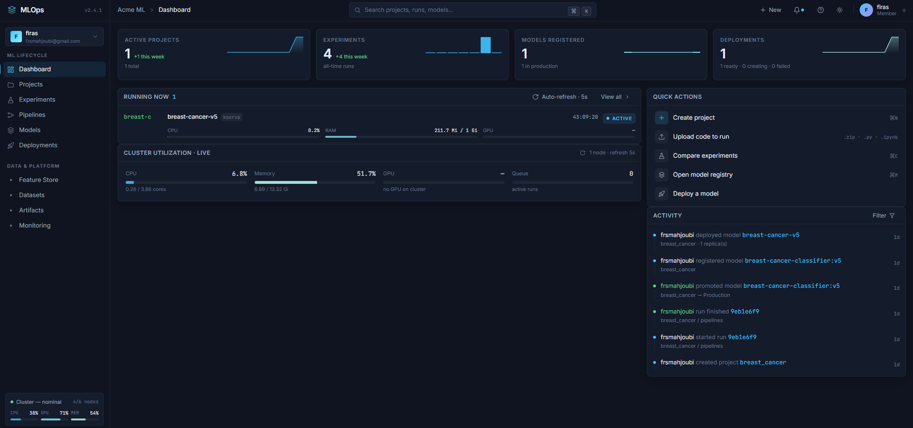
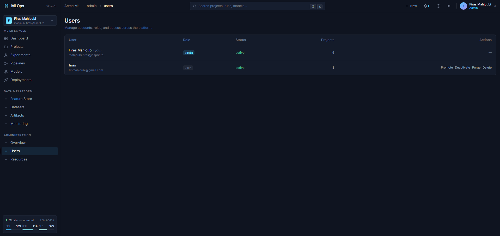
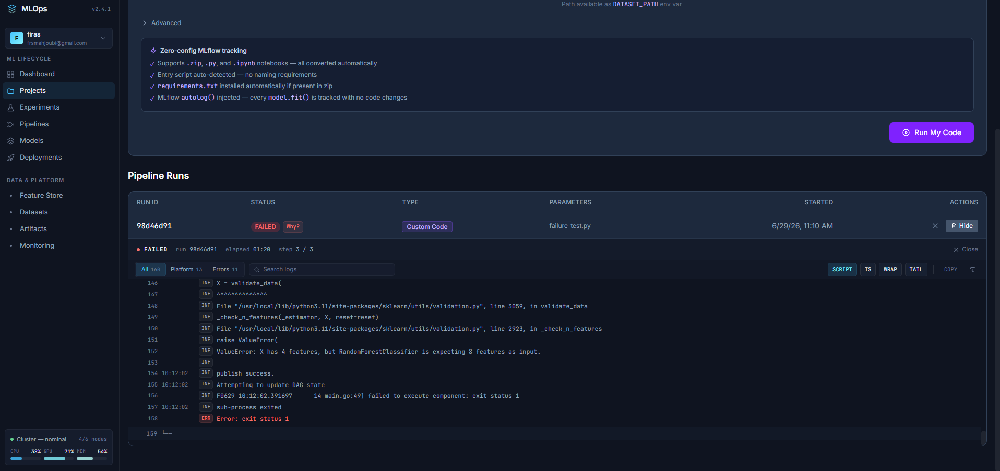
+ Per-project Monitoring
Model evolution over time per family · health verdict (improving / degrading) · version-to-version deltas · serving telemetry: request volume, latency p95, error rate — from real prediction logs.
Case Study — telecom churn, end to end
A real churn model (XGBoost + SMOTE, built from 2 Excel sources) uploaded as a notebook zip — the platform did the rest.
from 1 upload
test set
churn class
high-risk segment
- Notebook auto-converted (pip installs preserved)
- 3 model families ranked on the leaderboard
- Champion registered → deployed → public API
- Monitored: evolution, latency, error rate
upload a notebook → watch it train → leaderboard → register the champion → deploy → predict from the public API
Conclusion
End-to-end lifecycle, automated
Notebook → tracked runs → registry → live service → public API — from a single web interface, no infra knowledge required.
MLOps maturity: level 0 → 1
Repeatable pipelines, versioned models, one-click deployment; the platform itself delivered at level 2 through full CI/CD.
Real, production-grade infrastructure
Runs on AKS behind Cloudflare, fully open-source stack, validated by a real churn use case.
Perspectives
- Data-drift detection — feature stats at serve time
- Alerting — thresholds on error rate & degradation
- A/B testing & canary between model versions
- GPU scheduling for deep-learning workloads
- Multi-tenancy — teams & role-based access
- Curated training image — pre-pinned ML packages